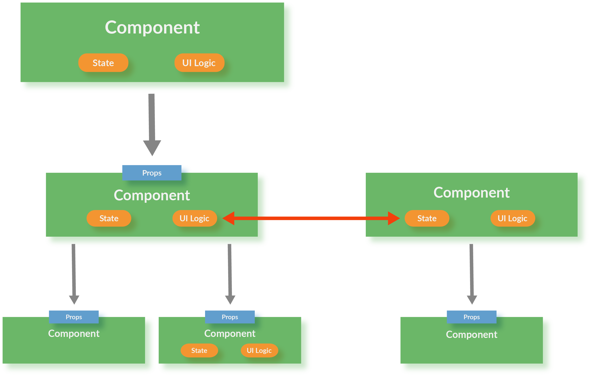
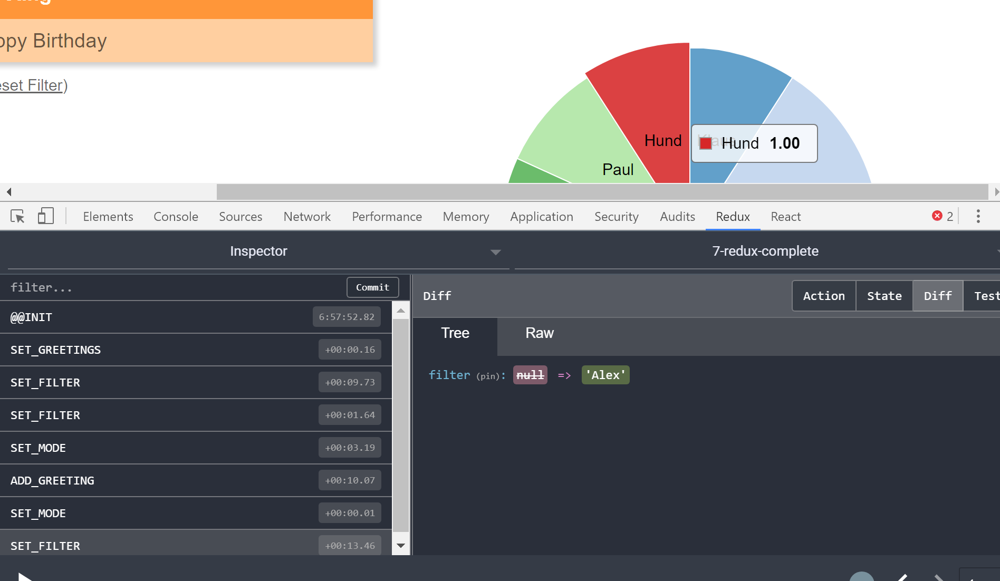

Fortgeschrittene React-Patterns
enterjs 2017
Oliver Zeigermann / @DJCordhose
Folien: http://djcordhose.github.io/react-workshop/2017_enterjs_advanced.html
Themen
Thema 1
Bibliotheken für Zustands-Management
Über Komponenten verteilter Zustand
Motivation für Zustandsmanagement
Zustand, der über viele Komponenten verteilt ist, macht Programme kompliziert
Gemeinsame Nutzung von State in unterschiedlichen Komponenten-Hierarchien ist schwierig
Zustandmanagement und UI-Handler werden aus React-Komponenten extrahiert
Besseres SoC
Option 1: Flux
Die klassische Idee
Option 2: MobX

Option 3: Redux

Redux vs MobX
- Redux ist die Mainstream-Lösung
- Lässt sich sehr gut testen
- Fehlersuche und Debugging erstaunlich einfach
- Funktioniert auch in großen Anwendungen sehr gut
- Dev-Tools erlauben Magisches
Allerdings: Lernkurve steil, gerade am Anfang wirklich viel Code
Redux ist für kleinere Anwendungen meistens Overkill
MobX erlaubt einen sehr einfachen Einstieg
Demo: Magische Redux Dev-Tools
Thema 2
Typen-Systeme für React-Anwendungen
Typen-Systeme???
Flow und TypeScript erweitern JavaScript um ein Typen-System
Ein Typen-System ist Vorraussetzung für wartbare Projekte
Die Typen-Systeme von Flow und TypeScript sind sehr ähnlich
Grundlagen mit Flow
// variables can have type information
let foo: string;
foo = 'yo';
// Error: number: This type is incompatible with string
foo = 10;
// types can be explicit (parameter) or inferred (return type)
function sayIt(what: string) {
return `Saying: ${what}`;
}
const said: string = sayIt(obj);
class Sayer {
what: string; // type also mandatory
constructor(what: string) {
this.what = what;
}
// return type if you want to
sayIt(): string {
return `Saying: ${this.what}`;
}
}
TypeScript mit React
class HelloMessage extends React.Component<Props, State> {
// ...
}
type Props = {
greeting: string;
repeat?: boolean;
};
type State = {
greeting: string;
}
constructor(props) {
super(props);
// ERROR: Object literal may only specify known properties,
// and 'aha' does not exist in type 'Readonly<State>'
this.state = {greeting: this.props.greeting, aha: 10};
// ERROR: Cannot assign to 'greeting' because
// it is a constant or a read-only property.
this.state.greeting = 'no way';
}
Was soll man nehmen?
Flow und TypeScript funktionieren beide sehr gut mit React
- Flow: Kann man leicht in existierende Projekte einführen
- Check kann nach und nach angeschaltet werden
- Check-Level (weak/full) wählbar
- Kann auch ohne Checker, nur in der IDE betrieben werden
- Basiert auf Babel React Preset
- Babel Plugin kann propTypes aus Flow-Typen erzeugen
- TypeScript: Beste Tool-Unterstützung
- Language Server ist Teil des Compilers
- Ermöglicht jeder IDE/Editor besten Support
- WebStorm / IDEA Support nah an Java
Thema 3
Laufzeit-Optimierungen
Beispiel: SVG Boxes

Eine einzelne Box mit D'n'D verschieben
Change Detection auf der Ebene des Virtual DOM
bei jeder Bewegung der Maus werden alle Boxen neu gerendert
Nicht direkt im DOM, sondern in einer leichtgewichtigen Datenstruktur (Virtual DOM)
Änderungen im echten DOM werden aus Änderungen im Virtual DOM errechnet
Change Detection auf der Ebene des Models
shouldComponentUpdate ist eine Lifecycle-Methode einer Komponente die diese Prozedur abkürzen kann
das alte Modell kann mit dem neuen verglichen werden
immutable data structures (immutable.js) können den Vergleich beschleinigen
Die Box Component
class Box extends React.Component {
shouldComponentUpdate(nextProps) {
// simple check: every change to a box creates a new object
const changed = this.props.box !== nextProps.box;
return changed;
}
render() {
const {box} = this.props;
return <rect data-id={box.id} x={box.x} y={box.y}
width="10" height="10"
stroke="black" fill="transparent" strokeWidth="1"/>;
}
}
immutable.js
import {List} from 'immutable';
this.state = {
boxes: List(boxes)
};
updateBox(id, x, y) {
const {boxes} = this.state;
const modifiedBox = {
id,
x,
y
};
const modifiedBoxes = boxes.set(id, modifiedBox);
this.setState({
boxes: modifiedBoxes
});
}
Build-Optimierungen
Minifizieren, Optimieren und alle React-Warnungen herauskompilieren:
webpack --optimize-minimize --define process.env.NODE_ENV=\"'production'\"
Oder als Kurzform:
webpack -p
Thema 4
Integration mit 3rd-Party Bibliotheken
3rd Party Libs?
Es gibt eine große Anzahl von sehr praktischen JavaScript-Bibliotheken
Viele davon sind aber nicht als React-Komponenten entwickelt worden
Beispiels
jQuery und jQuery Plugins wie z.B. Bootstrap
d3 für interaktive SVGs und Chart Bibliotheken wie nvd3
Unser Beispiel: Verteilung der Grüße

nvd3 Pie Chart mit d3
Aufgabe: Einbetten des Pie Charts in eine React-Komponente
Herausforderungen?
- Wie kommen wir an den DOM Knoten der React-Komponente?
- Wie sagen wir React, dass nun NVD3 den Rest macht? Also, dass React nicht mehr neu rendern soll.
- Änderungen des Zustands sollen nach wie vor richtig dargestellt werden
- Ab welchem Zeitpunkt soll NVD3 das Rendern übernehmen?
- Wie können wir aus NVD3 heraus auch wieder andere React-Komponenten beeinflussen?
React Chart Komponente #1
class Chart extends React.Component {
render() {
// (1) we render an empty svg and
// remember the reference to the DOM node
return <svg ref={c => this._chart = c}></svg>
}
shouldComponentUpdate() {
// (2) once rendered react never renders again
return false;
}
componentWillReceiveProps(nextProps) {
const {data} = nextProps;
// (3) we still get updates of properties making it reactive
updateNvd3Chart(this._chart, data);
}
// ...
}
React Chart Komponent #2
class Chart extends React.Component {
// ...
componentDidMount() {
const {data, onSegmentSelected} = this.props;
// (4) once rendered by react we create the nvd3 chart
const chart = createNvd3Chart(this._chart, data);
// (5) we delegate the label of clicked segment
// back to parent component
if (onSegmentSelected) {
chart.pie.dispatch.on("elementClick",
e => onSegmentSelected(e.data.label));
}
}
}